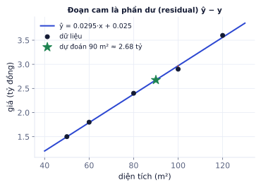
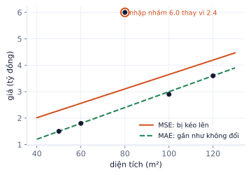
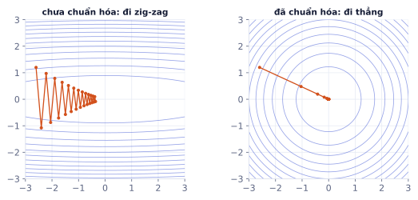
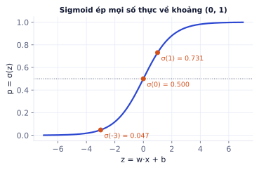
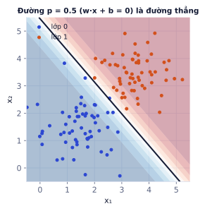
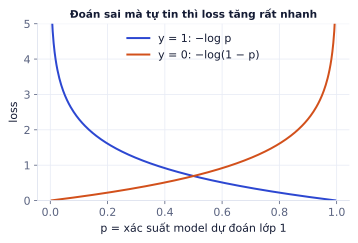
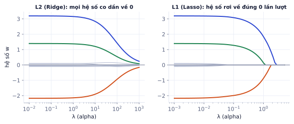

Bài 1
Binary cross-entropy
tính tayModel dự đoán p = 0.8 cho một mẫu.
Lời giải
y = 1: −ln 0.8 = 0.223. y = 0: −ln(1 − 0.8) = −ln 0.2 = 1.609. Đoán 80% cho lớp 1 mà đáp án là 0 bị phạt gấp 7 lần.
Hai model đơn giản nhất của ML, và cũng là hai thứ có mặt trong mọi mạng nơ-ron: lớp cuối của mạng hồi quy là hồi quy tuyến tính, lớp cuối của mạng phân loại nhị phân là hồi quy logistic. Hiểu kỹ hai model này (dự đoán thế nào, loss là gì, gradient ra sao, chống overfit thế nào) thì phần deep learning chỉ là "xếp chồng nhiều lớp".
Mọi bài trong P1–P2 đều cùng một khung: có dữ liệu đầu vào kèm đáp án, tìm một hàm dự đoán đáp án cho dữ liệu mới. Nắm khung này thì mỗi model mới chỉ là thay một mảnh trong đó.
Học có giám sát gồm bốn mảnh:
| Mảnh | Ý nghĩa | Ví dụ giá nhà |
|---|---|---|
| Dữ liệu | N cặp (xᵢ, yᵢ): đặc trưng và đáp án | x = diện tích, y = giá |
| Model | hàm ŷ = f(x; θ) có tham số θ | ŷ = w·x + b |
| Loss | đo dự đoán sai bao nhiêu | MSE |
| Tối ưu | cách tìm θ làm loss nhỏ | nghiệm đóng hoặc gradient descent |
Mục tiêu thật không phải loss nhỏ trên dữ liệu đã thấy, mà là dự đoán tốt trên dữ liệu chưa thấy. Đó là lý do có tập validation và test ở P1.2.
Hồi quy tuyến tính là model đầu tiên nên thử cho mọi bài toán dự đoán số: nhanh, dễ giải thích ("mỗi m² thêm 29 triệu"), và là baseline để biết model phức tạp hơn có đáng không.
ŷ = w₁x₁ + w₂x₂ + … + wₙxₙ + b = w · x + b
Mỗi trọng số wⱼ nói: giữ các đặc trưng khác cố định, tăng xⱼ một đơn vị thì ŷ tăng wⱼ. Bias b là giá trị dự đoán khi mọi x bằng 0.
MSE = (1/N) Σ (ŷᵢ − yᵢ)²
Phần ŷᵢ − yᵢ gọi là phần dư (residual). Bình phương để sai số âm và dương không triệt tiêu nhau, và để phạt nặng lỗi lớn: sai 2 bị phạt 4, sai 10 bị phạt 100.
Năm căn nhà (diện tích m², giá tỷ đồng): (50, 1.5), (60, 1.8), (80, 2.4), (100, 2.9), (120, 3.6). Đường thẳng khớp nhất là:
ŷ = 0.02945·x + 0.025
Nghĩa là mỗi m² thêm khoảng 29.5 triệu đồng. Nhà 90 m² được dự đoán 0.02945 × 90 + 0.025 ≈ 2.68 tỷ. Phần dư lớn nhất chỉ khoảng 0.07 tỷ, MSE ≈ 0.0014.
import numpy as np
x = np.array([50, 60, 80, 100, 120.]); y = np.array([1.5, 1.8, 2.4, 2.9, 3.6])
w, b = np.polyfit(x, y, 1) # w ≈ 0.02945, b ≈ 0.025
((w * x + b - y) ** 2).mean() # MSE ≈ 0.0014
0.0014024390243902551

MAE = (1/N) Σ |ŷᵢ − yᵢ| phạt tuyến tính, nên ít bị ảnh hưởng bởi điểm ngoại lai.
Giả sử căn 80 m² bị nhập nhầm giá 6.0 tỷ thay vì 2.4. Fit bằng MSE: đường bị kéo lên, b từ 0.025 thành 0.925, mọi dự đoán lệch lên gần 0.9 tỷ. Fit bằng MAE: ŷ = 0.03·x, gần như không đổi so với dữ liệu sạch.

| MSE | MAE | |
|---|---|---|
| Phạt lỗi lớn | rất nặng (bình phương) | tuyến tính |
| Với ngoại lai | nhạy | bền |
| Dự đoán | trung bình có điều kiện | trung vị có điều kiện |
| Đạo hàm | trơn, dễ tối ưu | không trơn tại 0 |
Trong thực tế: làm sạch dữ liệu trước (P0.3), rồi dùng MSE; nếu ngoại lai là thật và không bỏ được thì dùng MAE hoặc Huber loss (giống MSE khi lỗi nhỏ, giống MAE khi lỗi lớn).
Model dự đoán [3, 5, 2] cho đáp án [2, 5, 4].
Hồi quy tuyến tính là một trong số ít model có công thức giải đúng một phát. Nhưng công thức đó không mở rộng được cho mạng nơ-ron, nên bạn cần hiểu cả cách "đi từng bước" mà mọi model lớn dùng.
Đặt gradient của MSE bằng 0 rồi giải. Với một biến:
w = Σ(x − x̄)(y − ȳ) / Σ(x − x̄)² b = ȳ − w·x̄
Với 5 căn nhà ở trên: x̄ = 82, ȳ = 2.44.
Tổng quát với nhiều đặc trưng (X có thêm một cột toàn 1 cho bias):
w = (XᵀX)⁻¹ Xᵀy (normal equation)
Nghiệm đóng chính xác nhưng phải nghịch đảo ma trận n × n (n là số đặc trưng), chi phí khoảng n³. Với vài trăm đặc trưng thì tốt; với hàng triệu tham số của mạng nơ-ron thì không thể.
Lặp đi lặp lại: tính gradient của loss, bước một đoạn ngược hướng gradient.
ŷ = Xw + b
∂MSE/∂w = (2/N) Xᵀ(ŷ − y)
∂MSE/∂b = (2/N) Σ(ŷ − y)
w ← w − η · ∂MSE/∂w, b ← b − η · ∂MSE/∂b
Gradient theo w là "lỗi nhân với đầu vào": mẫu nào sai nhiều và có đặc trưng lớn sẽ kéo trọng số mạnh nhất.
Chuẩn hóa diện tích về trung bình 0, độ lệch chuẩn 1, bắt đầu w = b = 0, η = 0.1:
| Bước | w | b | MSE |
|---|---|---|---|
| 0 | 0 | 0 | 6.52 |
| 1 | 0.151 | 0.488 | 4.18 |
| 2 | 0.272 | 0.878 | 2.67 |
| 3 | 0.368 | 1.191 | 1.71 |
MSE giảm đều mỗi bước. Sau khoảng 100 bước, w và b hội tụ về nghiệm đóng (tính trên thang đã chuẩn hóa).
Nếu một đặc trưng là diện tích (50–500) và một là số phòng (1–5), loss rất "dốc" theo hướng diện tích và rất "phẳng" theo hướng số phòng. Learning rate đủ nhỏ để không văng theo hướng dốc thì lại quá nhỏ cho hướng phẳng: gradient descent đi zig-zag và rất chậm.

Ghi nhớ: chuẩn hóa đặc trưng (trừ mean, chia std, tính trên tập train) trước khi chạy gradient descent. Dùng đúng mean và std đó cho tập validation và test.
Chuẩn hóa bằng thống kê của cả tập dữ liệu. Nếu tính mean/std trên toàn bộ dữ liệu (gồm cả test) rồi mới chia train/test, thông tin của tập test đã "rò" vào quá trình train. Kết quả test sẽ lạc quan hơn thực tế. Luôn fit bộ chuẩn hóa trên train, rồi transform cho val/test (StandardScaler trong scikit-learn làm đúng việc này).
Rất nhiều bài toán thực tế là có/không: khách có rời đi không, giao dịch có gian lận không, email có phải spam không. Hồi quy logistic cho ra xác suất, không chỉ nhãn, nên bạn chọn được ngưỡng theo chi phí sai lầm. Nó cũng chính là một neuron với hàm kích hoạt sigmoid.
Tính điểm tuyến tính như hồi quy, rồi ép về khoảng (0, 1) bằng sigmoid:
z = w · x + b logit, có thể là bất kỳ số thực nào
p = σ(z) = 1 / (1 + e⁻ᶻ) xác suất thuộc lớp 1

Diễn giải trọng số: tăng xⱼ một đơn vị làm log-odds log(p/(1−p)) tăng wⱼ. Trọng số dương đẩy xác suất lớp 1 lên.
Dự đoán lớp 1 khi p ≥ 0.5, tức z ≥ 0. Tập điểm z = w·x + b = 0 là một đường thẳng (trong 2D), mặt phẳng (3D), siêu phẳng (nhiều chiều).
Model w = (1, 1), b = −4.5 với hai đặc trưng (giờ học, giờ làm bài tập):
| x | z = x₁ + x₂ − 4.5 | p | Dự đoán |
|---|---|---|---|
| (1, 2) | −1.5 | 0.182 | trượt |
| (3, 4) | 2.5 | 0.924 | đỗ |
| (4, 4) | 3.5 | 0.971 | đỗ |
Ranh giới là đường x₁ + x₂ = 4.5. Điểm nằm xa ranh giới có xác suất gần 0 hoặc 1; điểm sát ranh giới có xác suất gần 0.5.

Đó là lý do logistic không tách được dữ liệu hình vòng tròn hay hình XOR, còn mạng nơ-ron có lớp ẩn thì tách được: lớp ẩn "uốn" không gian trước khi lớp cuối kẻ đường thẳng.
Ngưỡng 0.5 không phải luật. Với phát hiện gian lận, bỏ sót một vụ gian lận đắt hơn nhiều so với kiểm tra nhầm một giao dịch, nên ngưỡng có thể là 0.2. Logistic cho ra xác suất chính là để bạn chọn ngưỡng theo bài toán (P1.2 dạy cách chọn bằng đường precision–recall).
Không dùng MSE cho phân loại vì kết hợp với sigmoid, MSE cho gradient rất nhỏ khi model sai mà tự tin, nên học chậm. Cross-entropy sinh ra từ maximum likelihood (P0.5) và cho gradient đơn giản đến bất ngờ.
BCE = −[ y·log p + (1 − y)·log(1 − p) ]
Chỉ một trong hai số hạng hoạt động: y = 1 thì loss = −log p; y = 0 thì loss = −log(1 − p). Tức là −log của xác suất model gán cho đáp án đúng.
| p (khi y = 1) | 0.99 | 0.9 | 0.6 | 0.5 | 0.1 | 0.01 |
|---|---|---|---|---|---|---|
| loss = −log p | 0.010 | 0.105 | 0.511 | 0.693 | 2.303 | 4.605 |

Dùng quy tắc dây chuyền với σ′(z) = σ(z)(1 − σ(z)):
∂BCE/∂p = −y/p + (1 − y)/(1 − p)
∂p/∂z = p(1 − p)
∂BCE/∂z = ∂BCE/∂p · ∂p/∂z = p − y (mọi thứ rút gọn đẹp)
∂BCE/∂w = (p − y) · x, ∂BCE/∂b = p − y
Một mẫu x = (2, 1), y = 0, bắt đầu w = (0, 0), b = 0, η = 0.5:
Trọng số giảm để kéo p về gần 0. Đặc trưng lớn hơn (x₁ = 2) bị chỉnh mạnh hơn. Bài tập 3 cho bạn tự làm một bước như vậy với số khác.
Gradient "dự đoán trừ đáp án" giống hệt softmax + cross-entropy ở Bài 1. Không phải trùng hợp: logistic chính là softmax với hai lớp, và MSE với hồi quy tuyến tính cũng cho gradient dạng (ŷ − y)·x.
Nhiều lớp: softmax regression. Với K lớp, thay sigmoid bằng softmax: tính K điểm zₖ = wₖ·x + bₖ, rồi pₖ = e^(zₖ) / Σ e^(zⱼ). Loss là −log p của lớp đúng, gradient theo zₖ là pₖ − [k là lớp đúng]. Trong scikit-learn, LogisticRegression tự chuyển sang softmax khi có nhiều hơn 2 lớp. Đây chính là lớp cuối của mọi mạng phân loại ảnh ở P2.
y = 0, model cho p = 0.7.
Khi có nhiều đặc trưng mà ít dữ liệu, model khớp luôn cả nhiễu: trọng số phình to để đi qua từng điểm train, rồi dự đoán tệ trên dữ liệu mới. Regularization thêm một "chi phí" cho trọng số lớn, buộc model chọn lời giải đơn giản hơn.
| Loss | Hiệu ứng | Trong scikit-learn | |
|---|---|---|---|
| L2 (Ridge) | MSE + λ Σ w² | thu nhỏ đều mọi trọng số | Ridge(alpha=λ) |
| L1 (Lasso) | MSE + λ Σ |w| | đẩy nhiều trọng số về đúng 0, tự chọn đặc trưng | Lasso(alpha=λ) |
λ (lambda) điều khiển mức phạt: λ = 0 là hồi quy thường; λ rất lớn thì mọi trọng số về 0.
Dữ liệu giả lập 100 mẫu, 10 đặc trưng, nhưng chỉ 3 đặc trưng đầu thật sự ảnh hưởng (hệ số thật 3, −2, 1.5, còn lại 0):
| Model | Hệ số học được (làm tròn) |
|---|---|
| Hồi quy thường | 3.19, −2.17, 1.39, −0.04, −0.00, −0.11, −0.08, 0.09, 0.01, 0.11 |
| Ridge (λ = 10) | 2.83, −1.90, 1.20, −0.03, −0.02, −0.09, −0.09, 0.12, 0.01, 0.03 |
| Lasso (λ = 0.2) | 2.94, −1.86, 1.15, 0, 0, 0, 0, 0, 0, 0 |
Lasso tự tìm ra đúng 3 đặc trưng quan trọng và gán 0 cho 7 đặc trưng nhiễu.

Đạo hàm của λw² là 2λw: càng gần 0 thì lực kéo càng yếu, nên trọng số tiến gần 0 nhưng hiếm khi đúng bằng 0. Đạo hàm của λ|w| là ±λ: lực kéo không đổi dù w đã rất nhỏ, nên w bị đẩy hẳn về 0 nếu đặc trưng đó không đủ hữu ích để chống lại.
C trong LogisticRegression là nghịch đảo của λ. C = 1/λ, nên C nhỏ thì phạt mạnh. LogisticRegression(C=0.01) là model rất "bị bó", C=100 gần như không regularize. Ngược chiều với Ridge(alpha=...), và là nguồn nhầm lẫn kinh điển khi tinh chỉnh.
Weight decay trong AdamW ở Bài 2 chính là L2. Dropout và early stopping (P2) là những cách regularize khác dành cho mạng nơ-ron.
Ghi nhớ: λ quá lớn thì underfit (model quá đơn giản), quá nhỏ thì overfit. Chọn λ bằng validation, không bao giờ bằng tập test. Nhớ chuẩn hóa đặc trưng trước khi regularize, nếu không đặc trưng có thang đo lớn sẽ bị phạt ít một cách vô lý.
Hai trọng số w = (3, −4), λ = 0.1.
| Hồi quy tuyến tính | Hồi quy logistic | |
|---|---|---|
| Đầu ra | số thực ŷ = w·x + b | xác suất p = σ(w·x + b) |
| Loss | MSE (hoặc MAE, Huber) | binary cross-entropy |
| Gradient theo w | (2/N)·Xᵀ(ŷ − y) | (p − y)·x |
| Lời giải | nghiệm đóng hoặc gradient descent | gradient descent (không có nghiệm đóng) |
| Ranh giới / dạng | đường thẳng khớp dữ liệu | đường thẳng tách hai lớp |
| Regularization | Ridge, Lasso | tham số C = 1/λ |
| Thuật ngữ | Nghĩa |
|---|---|
| supervised learning | học có giám sát: học từ dữ liệu có đáp án |
| regression / classification | dự đoán số thực / dự đoán nhãn |
| feature | đặc trưng, một cột đầu vào |
| weight, bias | trọng số, hệ số chặn |
| residual | phần dư ŷ − y |
| MSE / MAE | sai số bình phương trung bình / tuyệt đối trung bình |
| normal equation | công thức nghiệm đóng (XᵀX)⁻¹Xᵀy |
| standardization | chuẩn hóa về trung bình 0, độ lệch chuẩn 1 |
| sigmoid / logit | hàm ép về (0, 1) / điểm trước sigmoid |
| decision boundary | ranh giới quyết định, nơi p = 0.5 |
| binary cross-entropy | loss −log xác suất đáp án đúng, hai lớp |
| regularization | phạt độ phức tạp để chống overfit |
| Ridge / Lasso | hồi quy với phạt L2 / L1 |
| underfit / overfit | model quá đơn giản / học thuộc cả nhiễu |
Model dự đoán p = 0.8 cho một mẫu.
y = 1: −ln 0.8 = 0.223. y = 0: −ln(1 − 0.8) = −ln 0.2 = 1.609. Đoán 80% cho lớp 1 mà đáp án là 0 bị phạt gấp 7 lần.
x = [1, 2], y = 1, khởi tạo w = [0, 0], b = 0, learning rate 0.1.
z = 0 nên p = 0.5. p − y = −0.5. Gradient w = −0.5·[1, 2] = [−0.5, −1], gradient b = −0.5. Cập nhật: w = [0.05, 0.1], b = 0.05. Trọng số tăng để đẩy p lên phía y = 1.
Viết lớp LogReg bằng numpy với fit(X, y, lr, epochs) (gradient descent toàn batch, có L2 với hệ số lam) và predict_proba(X). So độ chính xác với sklearn.linear_model.LogisticRegression trên load_breast_cancer, nhớ chuẩn hóa dữ liệu.
import numpy as np
from sklearn.datasets import load_breast_cancer
from sklearn.model_selection import train_test_split
from sklearn.preprocessing import StandardScaler
from sklearn.linear_model import LogisticRegression
class LogReg:
def fit(self, X, y, lr=0.1, epochs=2000, lam=1e-3):
n, d = X.shape
self.w, self.b = np.zeros(d), 0.0
for _ in range(epochs):
p = 1 / (1 + np.exp(-(X @ self.w + self.b)))
self.w -= lr * (X.T @ (p - y) / n + lam * self.w)
self.b -= lr * (p - y).mean()
return self
def predict_proba(self, X):
return 1 / (1 + np.exp(-(X @ self.w + self.b)))
X, y = load_breast_cancer(return_X_y=True)
Xtr, Xte, ytr, yte = train_test_split(X, y, test_size=0.2, random_state=0, stratify=y)
sc = StandardScaler().fit(Xtr)
Xtr, Xte = sc.transform(Xtr), sc.transform(Xte)
ours = ((LogReg().fit(Xtr, ytr).predict_proba(Xte) > 0.5) == yte).mean()
ref = LogisticRegression(max_iter=5000).fit(Xtr, ytr).score(Xte, yte)
print(f"của bạn {ours:.3f} | sklearn {ref:.3f}")
của bạn 0.974 | sklearn 0.982
Dùng: học có giám sát (đặc trưng, nhãn, train/test), hồi quy tuyến tính, đọc hệ số.
Một công ty môi giới có dữ liệu 300 căn hộ đã bán: diện tích (m²), số phòng ngủ, khoảng cách tới trung tâm (km) và giá (tỷ đồng). Chia 80% train, 20% test, train LinearRegression, đọc hệ số để trả lời "thêm 10 m² thì giá tăng bao nhiêu", tính MAE trên test, rồi định giá một căn 70 m², 2 phòng ngủ, cách trung tâm 6 km.
import numpy as np
from sklearn.model_selection import train_test_split
from sklearn.linear_model import LinearRegression
from sklearn.metrics import mean_absolute_error
rng = np.random.default_rng(0)
n = 300
area = rng.uniform(35, 130, n)
rooms = np.clip(np.round(area / 30 + rng.normal(0, 0.6, n)), 1, 4)
dist = rng.uniform(1, 20, n)
price = 0.045 * area + 0.15 * rooms - 0.08 * dist + 0.8 + rng.normal(0, 0.3, n)
X = np.column_stack([area, rooms, dist])
# TODO: chia train/test (random_state=0), fit, in hệ số, mae, gia_du_doan
Viết code vào chỗ trống rồi bấm Chạy.
train_test_split(X, price, test_size=0.2, random_state=0). model.coef_ theo đúng thứ tự cột của X. Dự đoán một căn: model.predict([[70, 2, 6]])[0].
X_tr, X_te, y_tr, y_te = train_test_split(X, price, test_size=0.2, random_state=0)
model = LinearRegression().fit(X_tr, y_tr)
mae = mean_absolute_error(y_te, model.predict(X_te))
gia_du_doan = model.predict([[70, 2, 6]])[0]
for ten, w in zip(["diện tích", "phòng ngủ", "khoảng cách"], model.coef_):
print(f"{ten:12s}: {w:+.3f} tỷ mỗi đơn vị")
print(f"MAE test = {mae:.3f} tỷ, căn mới ≈ {gia_du_doan:.2f} tỷ")
diện tích : +0.045 tỷ mỗi đơn vị phòng ngủ : +0.130 tỷ mỗi đơn vị khoảng cách : -0.074 tỷ mỗi đơn vị MAE test = 0.292 tỷ, căn mới ≈ 3.73 tỷ
Hệ số âm của khoảng cách nghĩa là xa trung tâm thêm 1 km thì giá giảm khoảng 80 triệu, khi giữ nguyên diện tích và số phòng. MAE khoảng 0,3 tỷ là sai số điển hình bạn nên báo cho khách.
Dùng: nghiệm đóng (least squares), gradient descent, vai trò của chuẩn hóa đặc trưng.
Với cùng dữ liệu căn hộ ở bài trước (chạy lại ô đầu nếu cần), tìm w bằng hai cách: nghiệm đóng np.linalg.lstsq, và gradient descent tự viết. Thử gradient descent trên đặc trưng gốc và trên đặc trưng đã chuẩn hóa, cùng learning rate 0,1, 500 bước. Cách nào hội tụ? Kết quả có khớp nghiệm đóng không?
import numpy as np
rng = np.random.default_rng(0)
n = 300
area = rng.uniform(35, 130, n); rooms = np.clip(np.round(area / 30 + rng.normal(0, 0.6, n)), 1, 4); dist = rng.uniform(1, 20, n)
price = 0.045 * area + 0.15 * rooms - 0.08 * dist + 0.8 + rng.normal(0, 0.3, n)
X = np.column_stack([area, rooms, dist])
def gd(X, y, lr=0.1, steps=500):
Xb = np.column_stack([np.ones(len(X)), X]) # thêm cột 1 cho bias
w = np.zeros(Xb.shape[1])
for _ in range(steps):
w -= lr * 2 * Xb.T @ (Xb @ w - y) / len(y)
return w
# TODO: w_dong (nghiệm đóng trên X đã chuẩn hóa), w_goc = gd(X, price), w_chuan = gd(Xs, price)
Viết code vào chỗ trống rồi bấm Chạy.
Chuẩn hóa: Xs = (X - X.mean(0)) / X.std(0). Nghiệm đóng: np.linalg.lstsq(np.column_stack([np.ones(n), Xs]), price, rcond=None)[0]. Trên dữ liệu gốc, diện tích cỡ 100 nên gradient rất lớn, mỗi bước nhảy quá xa.
Xs = (X - X.mean(0)) / X.std(0)
w_dong = np.linalg.lstsq(np.column_stack([np.ones(n), Xs]), price, rcond=None)[0]
with np.errstate(over="ignore", invalid="ignore"):
w_goc = gd(X, price)
w_chuan = gd(Xs, price)
print("nghiệm đóng :", w_dong.round(4))
print("GD chuẩn hóa :", w_chuan.round(4))
print("GD dữ liệu gốc:", w_goc)
nghiệm đóng : [ 4.2443 1.2538 0.1639 -0.4216] GD chuẩn hóa : [ 4.2443 1.2538 0.1639 -0.4216] GD dữ liệu gốc: [nan nan nan nan]
Nghiệm đóng cho đáp án ngay nhưng cần nghịch đảo (hay giải) ma trận cỡ số đặc trưng, không dùng được cho mạng nơ-ron. Gradient descent dùng được mọi nơi, nhưng cần chuẩn hóa đặc trưng; không chuẩn hóa thì phải giảm learning rate hàng nghìn lần và chạy lâu hơn rất nhiều.
Dùng: hồi quy logistic, xác suất từ sigmoid, predict_proba, đọc dấu của hệ số.
Một nhà mạng muốn biết khách nào sắp hủy dịch vụ để gọi giữ chân. Dữ liệu: số tháng đã dùng, số lần gọi tổng đài khiếu nại, cước tháng (trăm nghìn). Train LogisticRegression (đặc trưng đã chuẩn hóa), in hệ số, tính accuracy trên test, và xác suất rời đi của một khách mới dùng 3 tháng, đã gọi khiếu nại 5 lần, cước 4 trăm nghìn.
import numpy as np
from sklearn.model_selection import train_test_split
from sklearn.preprocessing import StandardScaler
from sklearn.linear_model import LogisticRegression
rng = np.random.default_rng(1)
n = 800
months = rng.integers(1, 72, n); calls = rng.poisson(1.5, n); fee = rng.uniform(1, 8, n)
logit = -1.0 - 0.05 * months + 0.9 * calls + 0.15 * fee
churn = (rng.random(n) < 1 / (1 + np.exp(-logit))).astype(int)
X = np.column_stack([months, calls, fee])
# TODO: chia train/test (random_state=0, stratify), chuẩn hóa, fit, acc, p_khach_moi
Viết code vào chỗ trống rồi bấm Chạy.
Fit StandardScaler chỉ trên train, rồi transform cả train và test (và khách mới). model.predict_proba(x)[0, 1] là xác suất của lớp 1.
X_tr, X_te, y_tr, y_te = train_test_split(X, churn, test_size=0.25, random_state=0, stratify=churn)
sc = StandardScaler().fit(X_tr)
model = LogisticRegression().fit(sc.transform(X_tr), y_tr)
acc = model.score(sc.transform(X_te), y_te)
p_khach_moi = model.predict_proba(sc.transform([[3, 5, 4]]))[0, 1]
print(dict(zip(["tháng dùng", "khiếu nại", "cước"], model.coef_[0].round(2))))
print(f"accuracy test = {acc:.3f}, khách mới: P(rời đi) = {p_khach_moi:.2f}")
{'tháng dùng': -0.98, 'khiếu nại': 1.0, 'cước': 0.18}
accuracy test = 0.755, khách mới: P(rời đi) = 0.97
Hệ số dương của "khiếu nại" nghĩa là mỗi lần khiếu nại làm log-odds rời đi tăng lên; hệ số âm của "tháng dùng" nghĩa là khách lâu năm trung thành hơn. Đây là ưu điểm lớn của logistic regression: giải thích được cho đội kinh doanh.
Dùng: overfitting của hồi quy tuyến tính, Ridge (L2), Lasso (L1), hệ số bị đưa về 0.
Bạn có 60 mẫu và 40 đặc trưng, nhưng thật ra chỉ 3 đặc trưng đầu ảnh hưởng tới kết quả. So sánh LinearRegression, Ridge(alpha=1) và Lasso(alpha=0.1) theo R² trên test, và đếm số hệ số Lasso đặt về đúng 0.
import numpy as np
from sklearn.linear_model import LinearRegression, Ridge, Lasso
from sklearn.model_selection import train_test_split
rng = np.random.default_rng(2)
X = rng.normal(size=(60, 40))
y = 3 * X[:, 0] - 2 * X[:, 1] + 1.5 * X[:, 2] + rng.normal(0, 1, 60)
X_tr, X_te, y_tr, y_te = train_test_split(X, y, test_size=0.3, random_state=0)
# TODO: fit 3 model, r2 (dict tên → R² test), n_zero (số hệ số Lasso bằng 0)
Viết code vào chỗ trống rồi bấm Chạy.
model.score(X_te, y_te) trả về R². Đếm hệ số bằng 0: (lasso.coef_ == 0).sum().
models = {"Linear": LinearRegression(), "Ridge": Ridge(alpha=1.0), "Lasso": Lasso(alpha=0.1)}
r2 = {}
for ten, m in models.items():
m.fit(X_tr, y_tr)
r2[ten] = m.score(X_te, y_te)
print(f"{ten:6s}: R² train {m.score(X_tr, y_tr):.2f}, R² test {r2[ten]:.2f}")
n_zero = (models["Lasso"].coef_ == 0).sum()
print("Lasso giữ lại các đặc trưng:", np.flatnonzero(models["Lasso"].coef_))
Linear: R² train 1.00, R² test -5.67 Ridge : R² train 0.99, R² test 0.68 Lasso : R² train 0.97, R² test 0.86 Lasso giữ lại các đặc trưng: [ 0 1 2 3 4 6 7 9 12 16 17 22 25 27 28 35 36 37 38]
Với 42 mẫu train và 40 đặc trưng, hồi quy thường gần như thuộc lòng tập train (R² train gần 1) nhưng kém trên test. Lasso tự loại phần lớn đặc trưng nhiễu, giữ lại đúng các đặc trưng có ích: vừa chính xác hơn vừa dễ giải thích hơn.
Phần A: hồi quy giá nhà (California Housing)
fetch_california_housing(as_frame=True), chia train/test 80/20 với random_state=42.MedInc) với giá.LinearRegression trong một Pipeline có StandardScaler. Báo cáo MAE và RMSE trên test.Ridge với alpha ∈ {0.01, 0.1, 1, 10, 100} bằng cross_val_score 5-fold. Vẽ RMSE theo alpha.Phần B: phân loại ung thư vú (Breast Cancer)
LogReg tự viết (bài tập 5) với scikit-learn.Xong khi
import numpy as np, matplotlib.pyplot as plt
from sklearn.datasets import fetch_california_housing
from sklearn.model_selection import train_test_split, cross_val_score
from sklearn.pipeline import make_pipeline
from sklearn.preprocessing import StandardScaler
from sklearn.linear_model import LinearRegression, Ridge
from sklearn.metrics import mean_absolute_error, mean_squared_error
X, y = fetch_california_housing(return_X_y=True, as_frame=True)
Xtr, Xte, ytr, yte = train_test_split(X, y, test_size=0.2, random_state=42)
lin = make_pipeline(StandardScaler(), LinearRegression()).fit(Xtr, ytr)
pred = lin.predict(Xte)
print("MAE", mean_absolute_error(yte, pred), "RMSE", mean_squared_error(yte, pred) ** 0.5)
alphas = [0.01, 0.1, 1, 10, 100]
rmse = [-cross_val_score(make_pipeline(StandardScaler(), Ridge(alpha=a)), Xtr, ytr, cv=5,
scoring="neg_root_mean_squared_error").mean() for a in alphas]
plt.semilogx(alphas, rmse, marker="o"); plt.xlabel("alpha"); plt.ylabel("RMSE (CV)"); plt.show()
coef = lin[-1].coef_
for i in np.argsort(-np.abs(coef))[:3]:
print(X.columns[i], round(coef[i], 3))